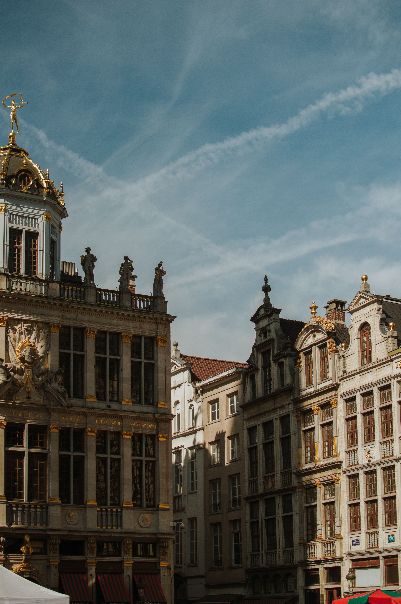
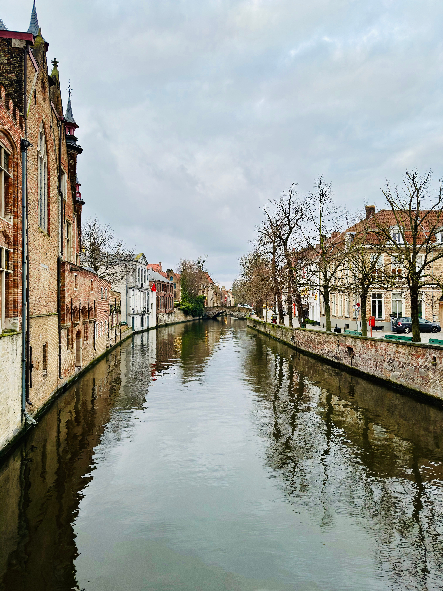
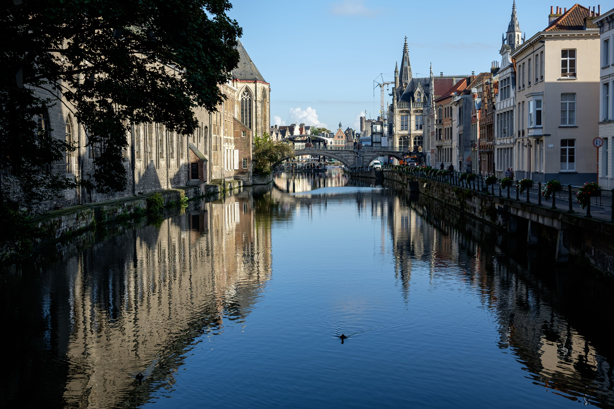
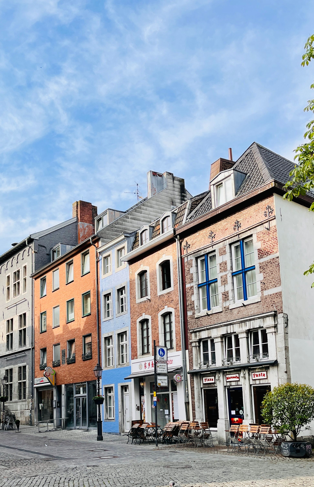
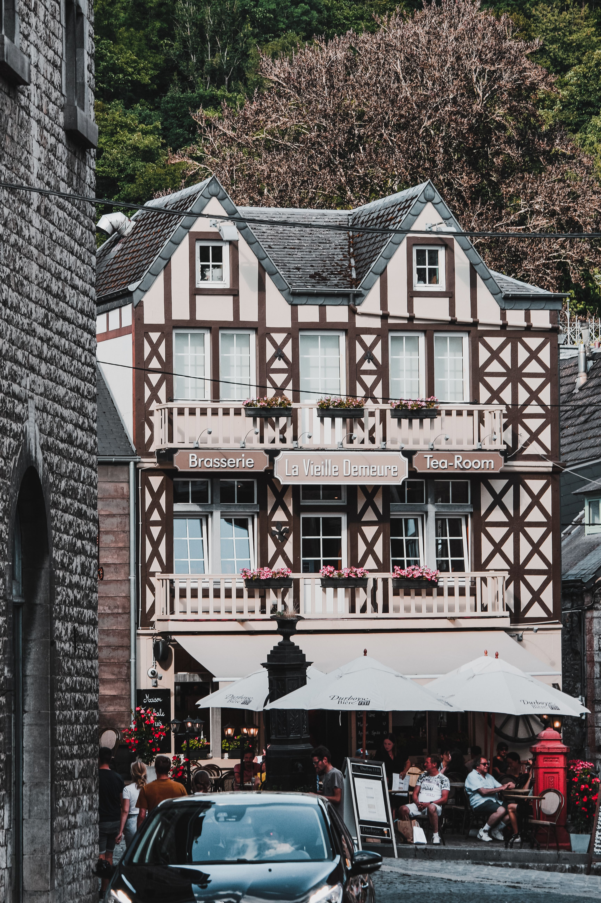

Belgium —
medieval cities, extraordinary beer, chocolate and the country that got under my skin
Nicola lived in Brussels from 2005 to 2006 and fell in love with Belgium. Not just the capital, but the entire country — the Flemish cities with their canals and cobbled streets, the Walloon character of the east, the warm people, the food culture, the beer tradition recognised by UNESCO, the iconic Spa-Francorchamps circuit. Belgium is one of Europe's most underrated countries. This is why you should explore it.
Six incredible cities, each with its own character and story. Explore them all.
The year Belgium got under my skin
From study abroad to a love affair with Belgium that never ended.
Nicola arrived in Brussels in 2005 to study and ended up staying a full year. That year changed everything. Belgium is not a destination that reveals itself in a weekend — it rewards those who stay, who explore, who take time to understand the differences between Brussels, Flanders and Wallonia, who sit in cafés and drink Belgian beer, who eat their way through the food culture, who travel between cities by train.
The first thing that strikes you about Belgium is how small it is, yet how much it contains. From Brussels you can reach Bruges, Ghent, Antwerp, Liège and beyond — all within an hour or two by train. This makes Belgium ideal for exploration. You can move through the country collecting experiences, discovering different atmospheres, understanding how Flanders differs from Wallonia, seeing how each city has its own distinct character.
Then there is the culture. The beer culture that runs so deep it's been recognised by UNESCO as an Intangible Cultural Heritage of Humanity. The chocolate that genuinely deserves its reputation. The waffles. The frites with proper Belgian mayonnaise. The moules-frites. The stoemp and carbonnade flamande. Eating in Belgium is not just about sustenance — it's an event, a ritual, part of understanding what it means to be Belgian.
The architecture stopped Nicola in her tracks again and again — the Gothic and Baroque guild houses ringing Grand Place, the medieval centres of Bruges and Ghent with their canals and bridges, the industrial character of Antwerp, the historic heart of Liège. Belgium is not a traditionally beautiful country in a postcard sense — but it has a deep, lived-in beauty that grows more compelling the longer you spend there.
And then there are the moments. A memorable race weekend at Spa-Francorchamps, with pit passes behind the scenes at one of the world's greatest racing circuits. Dinner at Le Grand Maur near Spa, in a beautiful historic mansion with stone walls and a grand fireplace. The realisation that you don't just like Belgium — you love it. That you could live here. That you want to come back.
The bilingual capital. International, cultured, home to Grand Place and the Atomium. Where Nicola lived and where Belgium's story begins. A city that grows more rewarding the longer you spend in it.
The Flemish north — Bruges with its canals, Ghent with its creative energy, Antwerp with its art and diamonds. Medieval cities filled with history, character and some of Europe's most distinctive architecture.
The French-speaking south and east — Liège with its Walloon identity and vibrant street markets, Spa with its mineral springs and legendary F1 circuit. A noticeably different atmosphere and character.

Brussels
My home for a year in 2005–06, and the city that made me fall for Belgium. Grand Place, the Atomium, Art Nouveau, brilliant cafés and beer culture — Brussels is a city that rewards you the longer you stay.
Explore Brussels →
Bruges
Canals, stepped-gable houses, cobbled streets and a medieval centre that really is as beautiful as the photographs suggest. Bruges may be famous for chocolate and postcard views, but wandering it on foot is the real pleasure.
Explore Bruges →
Ghent
Ghent has a personality entirely of its own: medieval towers and canals alongside a lively, lived-in city centre. Historic, atmospheric and full of character, it was one of the Belgian cities I loved exploring while living here.
Explore Ghent →
Antwerp
Antwerp mixes grand Flemish architecture with the Scheldt, Rubens, the Cathedral of Our Lady, diamonds and fashion. It feels confident and completely different again from Brussels, Bruges or Ghent.
Explore Antwerp →
Liège
French-speaking Liège brings a completely different side of Belgium into the mix. Set on the Meuse, it has historic streets, a lively centre and an unmistakably Walloon character — plus the waffle that bears its name.
Explore Liège →
Spa
A historic spa town in the Ardennes with one enormous extra draw: Spa-Francorchamps. I came here for the 2005 Belgian Grand Prix, had pit passes for the weekend and hoped in vain to meet my F1 hero Jacques Villeneuve. An unforgettable trip.
Explore Spa →One unforgettable Grand Prix weekend at Spa-Francorchamps
In September 2005, during Nicola's year living in Belgium, she went to the Belgian Grand Prix at Spa-Francorchamps — a genuine bucket-list weekend. The race took place on 11 September, with Kimi Räikkönen taking the win. Spa-Francorchamps, set in the Ardennes hills, is one of Formula 1's most celebrated circuits. The track demands respect. The atmosphere is electric. The racing is brilliant.
Having pit passes for the weekend made it even more special. Getting behind the scenes, seeing the cars and teams up close and soaking up the atmosphere made an already brilliant Grand Prix weekend unforgettable.
The one thing Nicola was desperately hoping for was a chance to meet her Formula 1 hero, Jacques Villeneuve, who was racing for Sauber that weekend. Sadly, that meeting never happened — although Villeneuve did give her something to cheer about by finishing sixth.
And then there was dinner at Le Grand Maur, remembered for its wonderfully atmospheric historic setting — old stone, timber and a grand fireplace — and a proper multi-course gastronomic meal. The racing, the pit access, Spa, the Ardennes setting and that memorable dinner all combined to make the trip one of Nicola's standout memories from her year in Belgium.
Why Belgium belongs on your list
Bruges, Ghent, Antwerp — preserved medieval centres that feel lived-in and real, not frozen in time.
UNESCO-recognised tradition. Hundreds of distinct Belgian beers. Abbey beers, lambics, Trappist ales — extraordinary brewing.
Not a cliché. Genuinely exceptional. The craftsmanship, the quality, the history. Every visit to a chocolatier is rewarding.
Brussels waffles, Liège waffles — both exceptional in different ways. Fresh, warm, often with chocolate or fruit.
Belgian fries (frites) with proper Belgian mayonnaise. Moules-frites — mussels and fries — is a Belgian institution.
Brussels' most iconic landmark — a 102-metre-tall model of an iron crystal from 1958. Quirky, futuristic, unforgettable.
One of the most spectacular squares in Europe. UNESCO World Heritage Site. Gothic and Baroque guild houses surrounding the Town Hall.
Flemish art, Art Nouveau, medieval streets. Belgium has serious cultural depth.
Tintin. The Smurfs. Belgium's contribution to comic book history is serious and celebrated throughout the country.
One of the world's greatest Formula 1 circuits. Legendary, challenging, set in beautiful Ardennes hills.
A strong rail network makes the major cities easy to combine, whether you travel from one base or build a multi-city trip.
Belgians are warm, funny and genuinely welcoming. They're proud of their country and culture. Take time to engage and they'll surprise you.
Why Belgium's food culture is extraordinary
Eating in Belgium is not just about sustenance — it's a core part of the culture. Belgian food reflects the country's geography, history and values. Every city has its specialities. Every café and brasserie has pride in what it serves.
Belgian Beer — UNESCO Heritage
Belgium's brewing tradition runs deep. The country produces hundreds of distinct beers — abbey beers brewed by monks using centuries-old recipes, Trappist ales from monastic communities, lambics with wild yeasts and fruit, strong dark beers, crisp pilsners. Belgian beer culture was recognised by UNESCO as an Intangible Cultural Heritage of Humanity. This is not exaggeration. The diversity, complexity and quality are genuinely world-class. Sitting in a Belgian café with a proper beer is one of life's pleasures.
Waffles — Two Styles
Brussels waffles are fluffy, golden, often served with chocolate or fruit. Liège waffles are denser, richer, with pearl sugar baked into the batter. Both are exceptional. Fresh Belgian waffles from a proper street stand are worth the detour — they're nothing like the frozen versions you might have tried elsewhere.
Belgian Chocolate
Belgian chocolate deserves its reputation. The craftsmanship is serious. The quality is exceptional. From artisanal chocolatiers creating intricate pralines to larger makers like Godiva and Neuhaus, Belgium has chocolate culture built into its DNA. A visit to a traditional chocolaterie is not just about buying chocolate — it's about understanding Belgian quality and pride.
Frites & Moules-Frites
Belgian fries (frites) are an art form. Cut thick, fried twice, served in a paper cone with proper Belgian mayonnaise (not ketchup). Moules-frites — mussels and fries — is a Belgian institution. Fresh mussels steamed with white wine, shallots and herbs, served with frites. It's simple, it's perfect, it's Belgium.
Traditional Dishes
Carbonnade flamande is a rich Flemish beef stew with beer and dark spices. Stoemp is creamy mashed potatoes with vegetables. Waterzooi is a vegetable or chicken stew. These are comfort foods that have been perfected over centuries. Eating them in Belgium, in a proper brasserie with locals around you, connects you to the country's history and culture.
Café Culture
The Belgian café and brasserie culture is an essential part of travel. This is where you sit for hours with a coffee or beer, where you watch the city pass by, where you have conversations and experience Belgian life. It's not about rushing through a meal — it's about settling in, taking time, being part of the rhythm.
Why Belgium is ideal for independent travel
Belgium is fantastically compact. You can experience several very different cities without huge travel days. The rail network connects the major centres well, making Belgium ideal if you want to explore independently without hiring a car, while having a car can be useful for the Ardennes and more rural areas.
Rail Travel
Belgium's rail network makes city hopping refreshingly straightforward. Brussels, Bruges, Ghent, Antwerp and Liège are well connected, so you can build a multi-city itinerary without needing a car. For exact journey times, fares and engineering updates, check the current SNCB/NMBS timetable before travelling.
Brussels as a Base
Because Brussels is so well connected, it works brilliantly as a base for exploring Belgium. Spend 3–4 days in the capital, then take day trips to Bruges, Ghent, Antwerp, even Liège. Or use Brussels as your starting point and make it your only overnight base, moving through other cities as you go.
Multi-City Combinations
A classic Belgium trip might be: 2 nights Brussels, 1 night Bruges, 1 night Ghent, back to Brussels. Or: Brussels → Bruges → Ghent → Antwerp → home. Or if you have a week: Brussels → Bruges → Ghent → Antwerp → Liège → Spa → back to Brussels. The trains make this easy.
When to Use a Car
For the six main cities, trains are better than a car — parking is expensive, city centres are compact and walkable, trains avoid stress. A car becomes useful if you're exploring the Ardennes region, rural Wallonia, or want to visit smaller towns beyond the main cities.
Getting There from Ireland
Belgium is an easy European option from Ireland, with direct air links to the Brussels area available on many schedules. From Brussels Airport there are rail connections into the city and onward around Belgium. Check current airline and rail timetables for your travel dates.
Virtually explore Belgian cities before your trip
Want to get a feel for what these cities are really like before you book your trip? Our partnership with Drive From Home lets you virtually explore four major Belgian cities from your own home. It's a brilliant way to see the streets, architecture and atmosphere — and help plan your real journey.
Note: Drive From Home experiences are available here for Brussels, Ghent, Antwerp and Liège.
Plan your Belgium trip with expert guidance
Want to explore Belgium properly with expert guides and everything taken care of? TourRadar has brilliant multi-day tours covering the best of this incredible country.
Belgium rewards exploration — and a guided tour is an excellent way to move between cities, learn the stories behind what you're seeing, and discover places you might miss on your own. Let someone else handle the logistics while you focus on the waffles, the beer, the architecture and the people.
Disclosure: This is an affiliate link. If you book through it we may earn a small commission at no extra cost to you.
Book your experiences on Klook
Skip-the-line tickets, city passes, day trips and attraction entry — often cheaper than booking at the door.
Disclosure: If you book through this link we may earn a small commission at no extra cost to you.
Book Belgium experiences with GetYourGuide
From Grand Place walking tours to Belgian beer tastings, Bruges day trips and Ghent food experiences — browse activities here:
Disclosure: If you book through these links we may earn a small commission at no extra cost to you.
Common questions
Belgium FAQ
What to pack for Belgium
Belgium packing essentials — what we'd bring
Belgium's weather can be changeable — pack layers. Comfortable walking shoes are essential as all six cities are very walkable. Whether summer warmth or winter cold, good preparation keeps you comfortable while you explore.
All six cities are best explored on foot. Brussels, Bruges, Ghent, Antwerp — expect cobblestone streets. Comfortable, well-broken-in shoes are essential.
Belgian weather is changeable. A lightweight sweater or fleece you can pack away works year-round. In summer, light layers for variable temperatures and evening coolness.
Belgium gets rain. A packable rain jacket doesn't take up much space and is genuinely useful. Keep one in your day bag when exploring.
Small, lightweight umbrella for sudden rain. Many cafés and shops provide shelter, but being prepared means you can explore regardless.
For day trips to Bruges, Ghent or Liège from Brussels. Carry water, extra layer, camera, anything you pick up without weighing yourself down.
Belgium is incredibly photogenic — Grand Place, Bruges canals, the Atomium. Keep your phone charged for maps, photos and music.
Belgium uses Type E plugs. A universal travel adaptor is essential so you can charge devices at your accommodation.
Belgium has excellent tap water. Bring a reusable bottle, refill at cafés and fountains, stay hydrated on long walking days.